New Year Card
正月のカード 作品の一覧
76 作。1つずつ、主役の姿も場面も仕掛けも違います。絵を押すと、さわって動く本物が開きます。おみくじも引けます。
ひつじ（13）
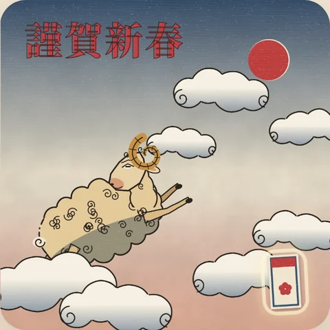
01 雲をゆく版：木版 × 浮世絵ふう × 藍と紅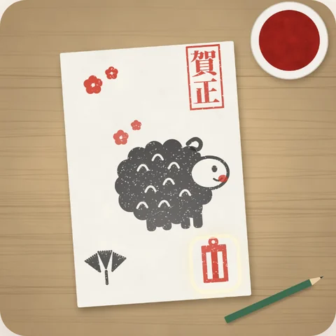
02 ぽんっと未版：消しゴムはんこ × 2色刷り（朱と墨）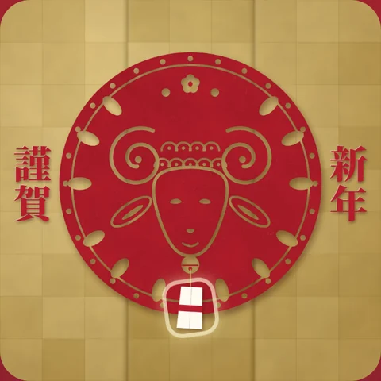
03 紅の紋切り絵 × 図案（左右対称）× 紅と金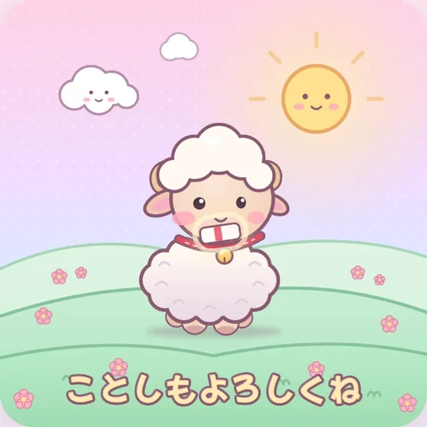
04 のぞいて、ぴょんゆるかわ × パステル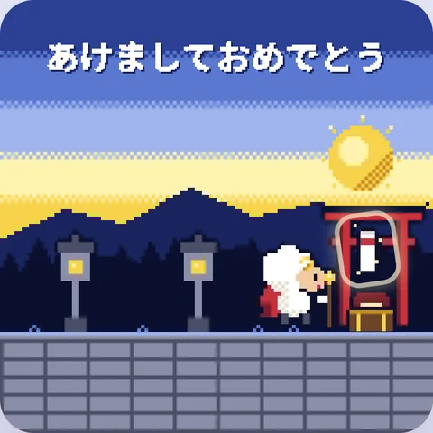
05 ぼうけんの朝ドット × 8bit × 紺と金（16色）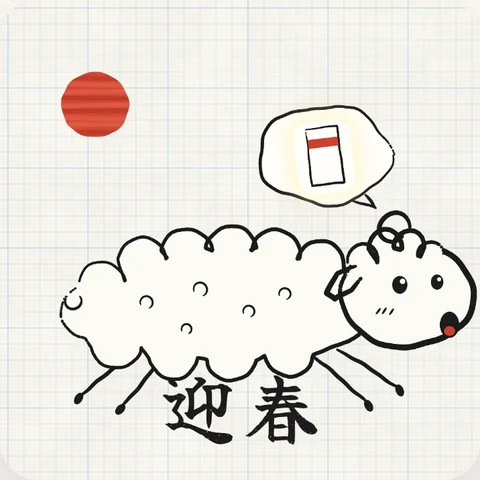
06 ねころび筆ペン × 落書き × 白黒（朱を一点）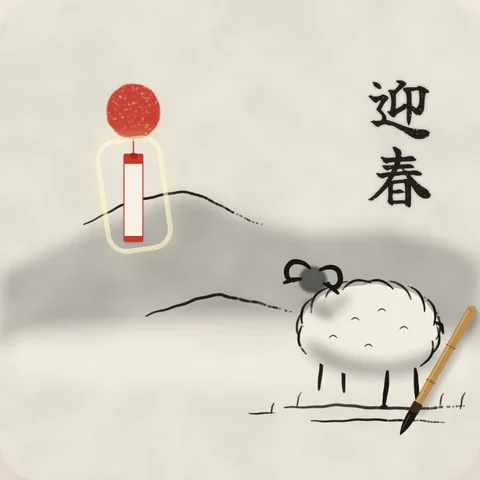
07 余白の日の出墨 × 水墨画 × 和紙（朱を一点）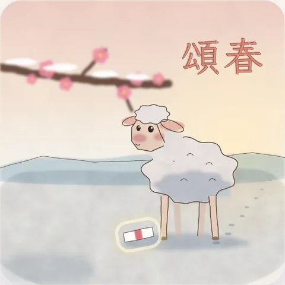
08 雪の朝の子ひつじ水彩 × 淡彩 × 和紙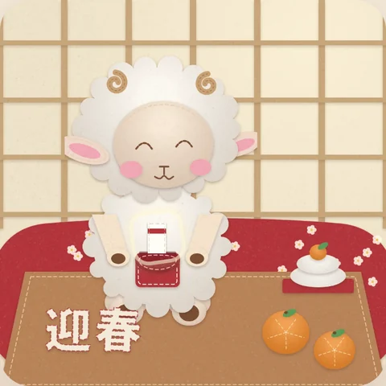
09 こたつでぬくぬくフェルト × 絵本 × 生成りと茜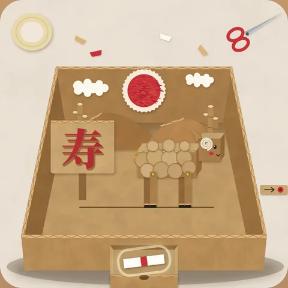
10 からくり箱庭段ボール × 2.5D × クラフトと紅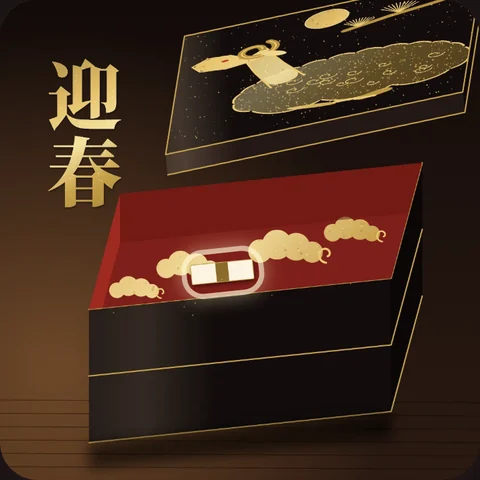
11 漆の重箱漆 × 蒔絵ふう × 黒と金（2.5D）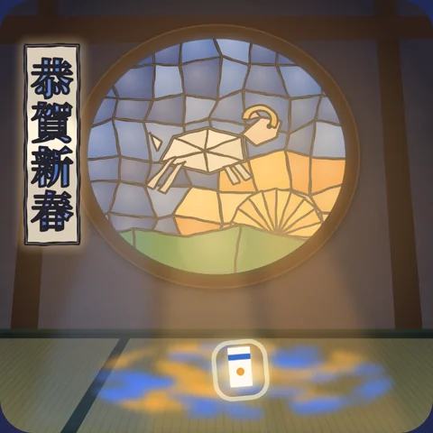
12 光の丸窓ステンドグラス × 幾何 × 瑠璃と橙（光は逆光）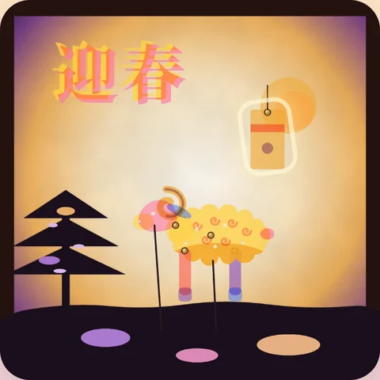
13 影絵のごあいさつセロハン × 影絵 × 琥珀と紫（逆光）
初日の出（13）
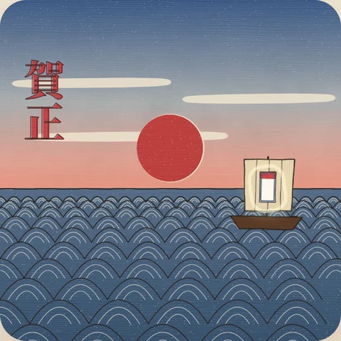
01 波の上の初日版：木版 × 浮世絵ふう × 藍と紅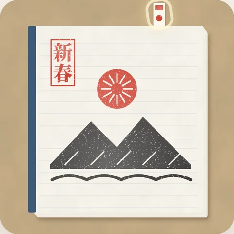
02 はんこのパラパラ日の出版：消しゴムはんこ × 2色刷り（朱と墨）- 03 紙の山の夜明け切り絵 × 紙の層（シャドーボックス）× 紺と金
- 04 おねぼうお日さまゆるかわ × 橙と空色
- 05 初日の出を釣り上げろドット × 8bit × 朝焼けと海（16色）
- 06 ご来光ばんざい筆ペン × 落書き × 白黒（朱を一点）
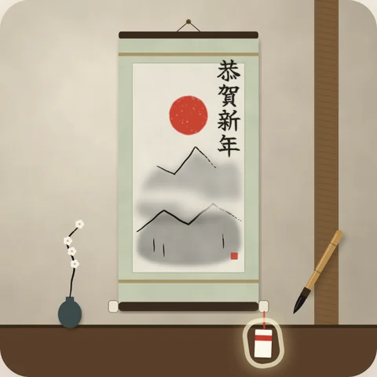
07 掛け軸の日の出墨 × 水墨画 × 掛け軸（朱を一点）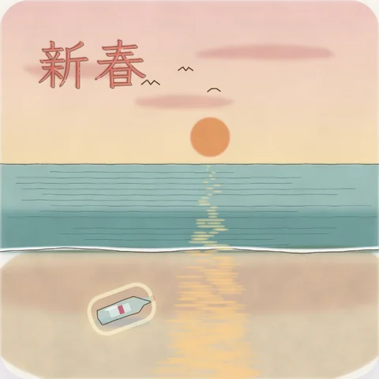
08 光の道水彩 × 淡彩 × 薄紅と青緑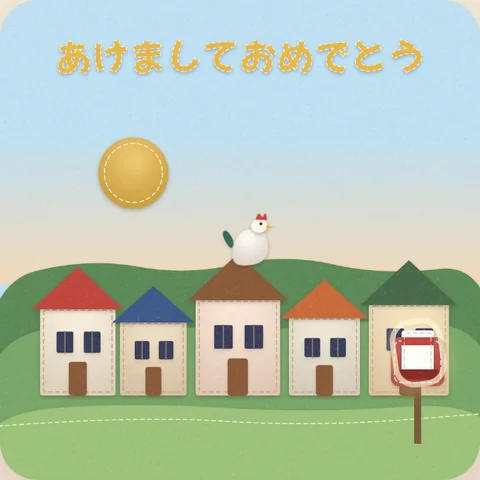
09 おはよう、まちのみんなフェルト × 絵本 × 紺と山吹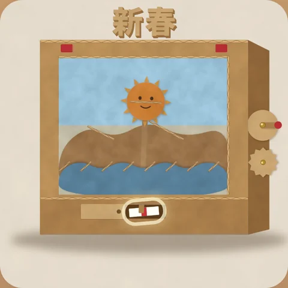
10 手回しの日の出段ボール × 2.5D × クラフトと橙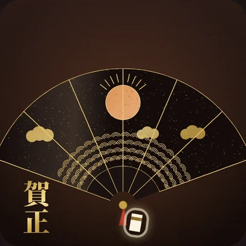
11 扇の日の出漆 × 蒔絵ふう × 黒と金（朱を少し）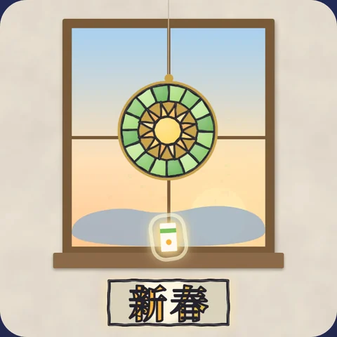
12 窓辺のサンキャッチャーステンドグラス × 窓辺 × 金と若草- 13 鶴の夜明けセロハン × 影絵 × 紅と紫（逆光）
獅子舞（13）
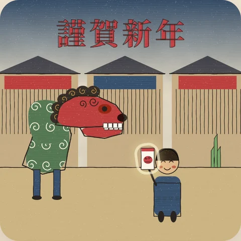
01 町角の獅子版：木版 × 浮世絵ふう × 紅と藍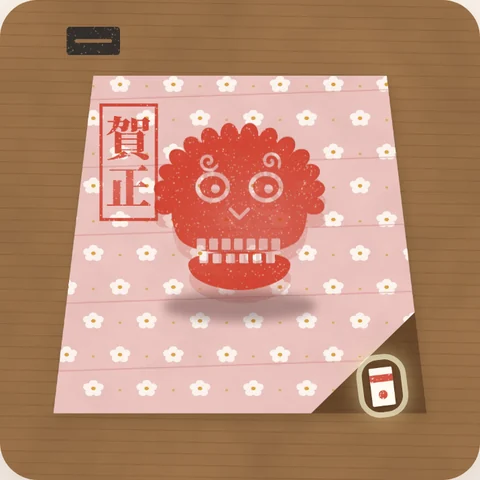
02 はんこの獅子、とびだす版：消しゴムはんこ × 千代紙 × 朱と墨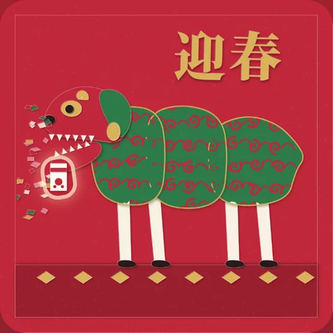
03 唐草の舞切り絵 × 透かし彫り（唐草）× 紅と緑と金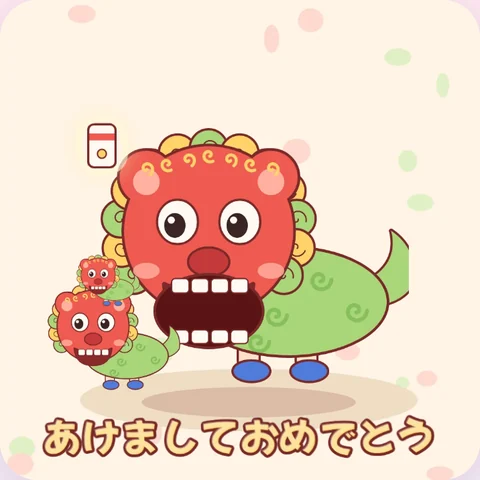
04 ちびししまいゆるかわ × 2頭身 × 赤と若草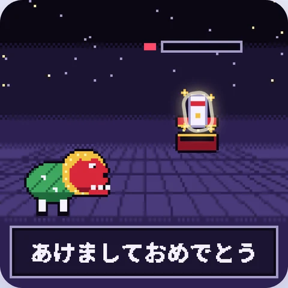
05 獅子舞のおはらいドット × 戦いの画面 × 紅と黒紫（16色）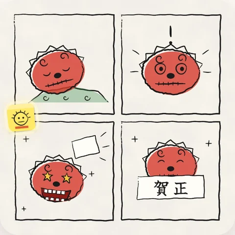
06 獅子の4コマ筆ペン × 4コマ漫画 × 墨と朱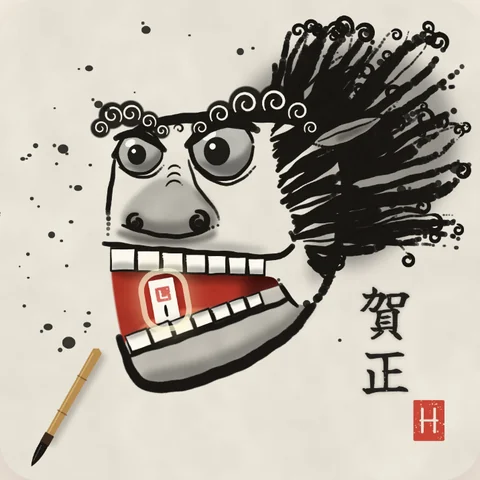
07 一筆の獅子水墨 × 大写しの一筆 × 墨と朱（口の中だけ）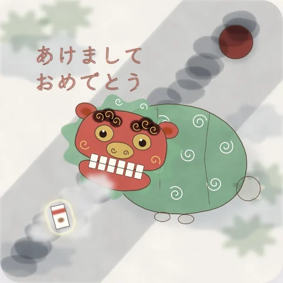
08 境内のひるね淡彩 × 見下ろし × 薄紅と若草- 09 ゆびにんぎょうの獅子フェルト × 指人形 × 赤と萌黄
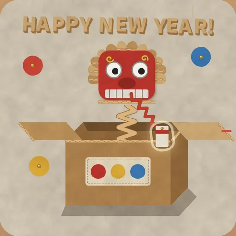
10 びっくり獅子箱段ボール工作 × びっくり箱 × クラフトと赤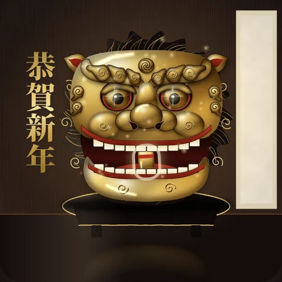
11 漆の獅子頭蒔絵 × 朱漆と金 × 床の間の飾り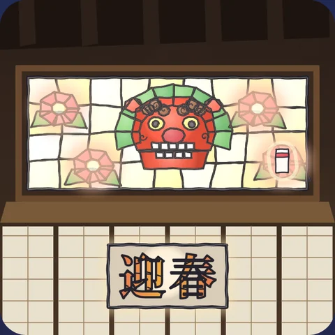
12 唐獅子牡丹の欄間ステンドグラス × 欄間 × 紅と金- 13 影絵の獅子舞セロハン × 影絵 × 紅と緑（逆光）
凧（12）
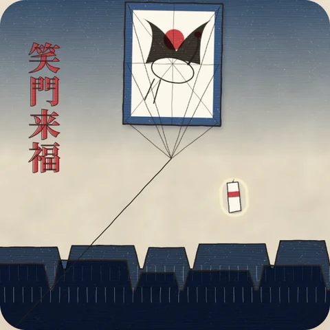
01 江戸の大凧版：木版 × 見上げ × 藍と紅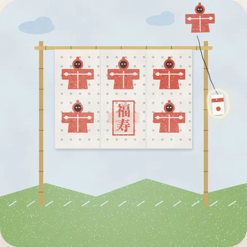
02 手ぬぐいの奴凧版：消しゴムはんこ × 手ぬぐい × 朱と墨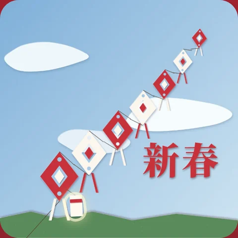
03 紅白の連凧切り絵 × 連凧 × 紅と白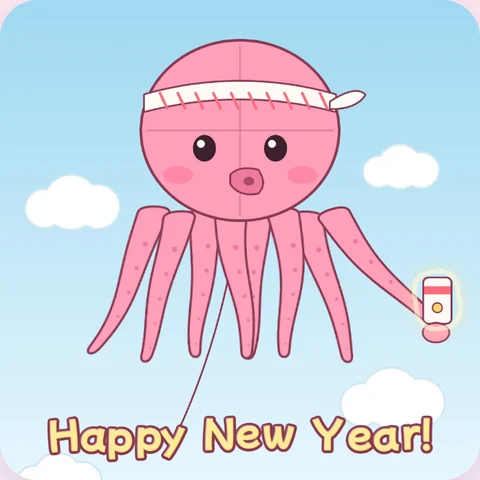
04 たこのたこゆるかわ × 顔つきの凧 × 桃と水色- 05 凧あげチャレンジドット × 縦の画面 × 空色と赤（16色）
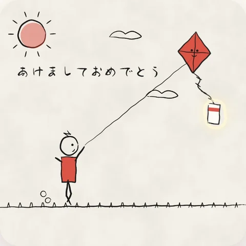
06 走れ、凧あげ筆ペン × 画用紙の落書き × 墨と朱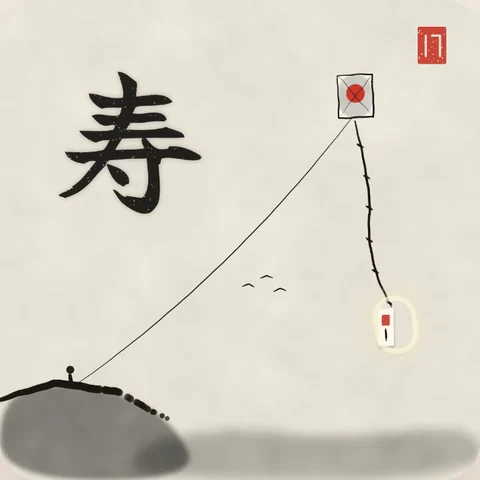
07 冬空の一凧水墨 × 大きな余白 × 墨と朱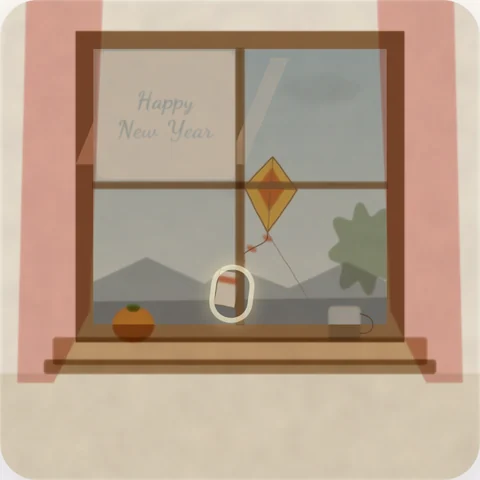
08 窓から見た凧淡彩 × 室内から見上げ × 水色と山吹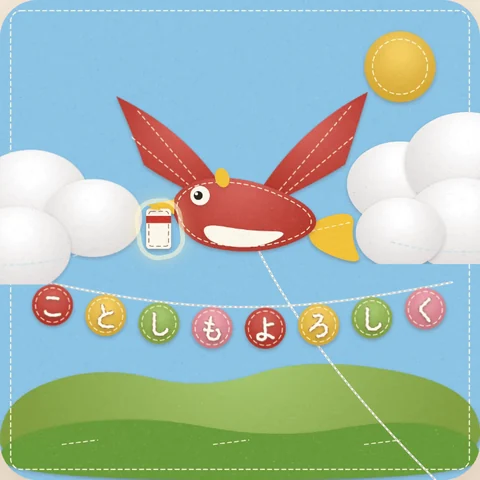
09 鳥のかたちの凧フェルト × 鳥の凧 × 空色と赤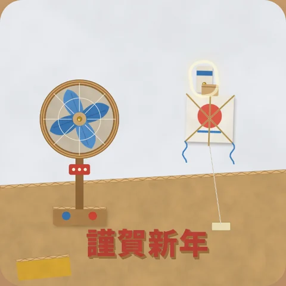
10 せんぷうき凧あげ段ボール工作 × 机の上 × クラフトと青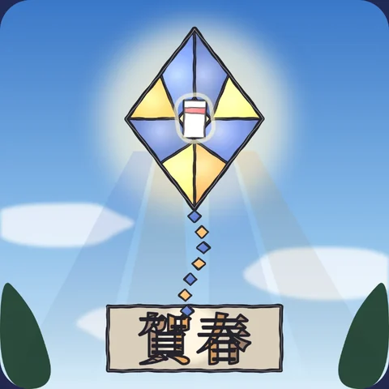
12 ひかりの凧ステンドグラス × 逆光の空 × 瑠璃と橙- 13 凧の行列セロハン × 影絵 × 黄と青（逆光）
鏡餅（12）
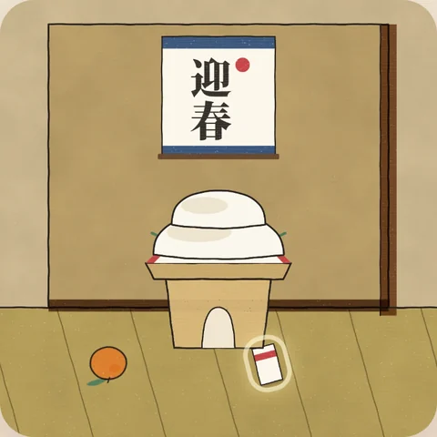
01 床の間の鏡餅版：木版 × 浮世絵ふうの座敷 × 藍と橙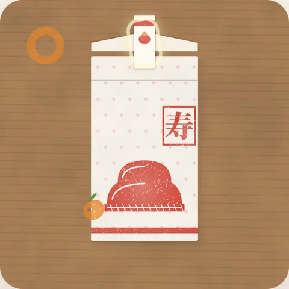
02 ぽち袋の鏡餅版：消しゴムはんこ × ぽち袋 × 朱と墨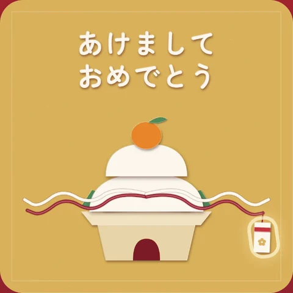
03 水引の鏡餅切り絵 × 紙の重ね × 白と紅（水引）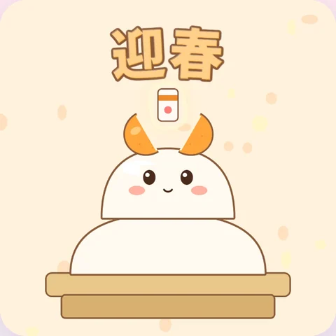
04 もちもち鏡餅ゆるかわ × 顔のある鏡餅 × 白と橙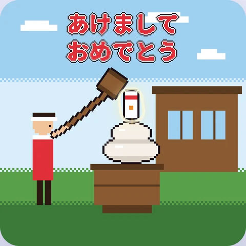
05 もちつきゲームドット × もちつき × 白と朱（16色）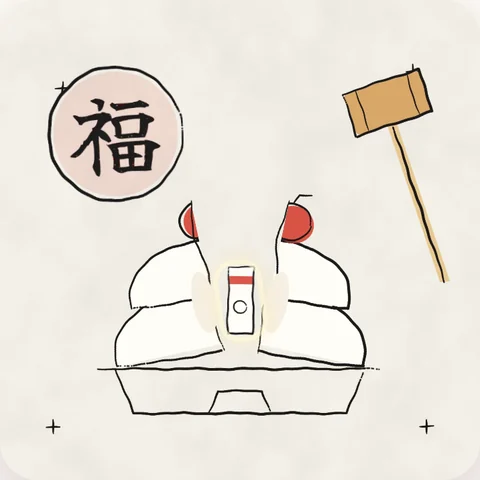
06 鏡開き筆ペン × 画用紙の落書き × 墨と朱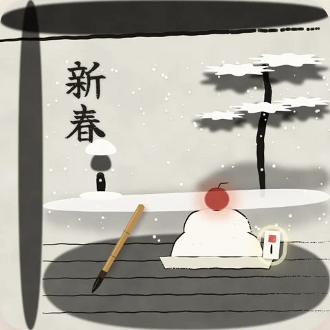
07 雪見の鏡餅水墨 × 縁側の低い所 × 墨と朱（橙だけ）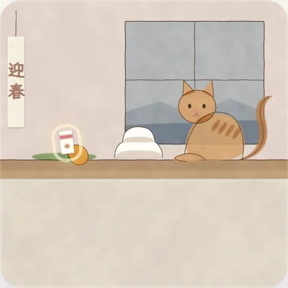
08 窓辺の鏡餅と猫淡彩 × 台所の窓辺 × 薄桃と若草- 09 むにゅっと鏡餅フェルト × ざぶとん × 白と茜
- 10 鏡餅の積み木段ボール工作 × 積み木 × クラフトと橙
- 11 金の三方蒔絵 × 黒漆の三方 × 黒と金
- 13 回り灯籠セロハン × 回り灯籠 × 琥珀と青
初詣の鈴（13）
- 01 拝殿の鈴版：木版 × 拝殿の正面 × 紅と藍
- 02 蛇腹の御朱印帳版：消しゴムはんこ × 蛇腹の帳面 × 朱と墨
- 03 鈴のつるし飾り切り絵 × つるし飾り × 紅と金
- 04 すずちゃんゆるかわ × 顔のある鈴 × 金と紅
- 05 神社でおまいりドット × 拝殿の正面 × 朱と白（16色）
- 06 おみくじの筒筆ペン × 画用紙の落書き × 墨と朱
- 07 雪の拝殿水墨 × 雪の拝殿 × 墨と朱
- 08 鈴から見た家族淡彩 × 真上から見下ろし × 薄紅と若草
- 09 フェルトの神社フェルト × ミニチュアの神社 × 朱と萌黄
- 10 段ボールの拝殿段ボール工作 × 紙コップの鈴 × クラフトと紅
- 11 金の鈴蒔絵 × 根付の鈴 × 黒と金
- 12 鈴の音の窓ステンドグラス × 鈴の形の丸窓 × 紫と金
- 13 音の花火セロハン × 影絵 × 赤と青（逆光）